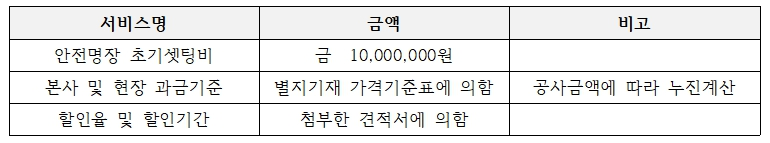
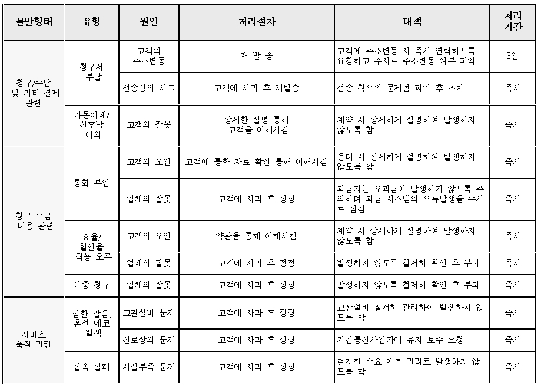
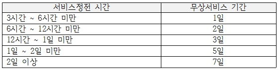

회원가입
Sign up
안전명장은 3가지 타입의 회원으로 가입이 가능합니다.
아래 내용을 읽어보신 후 귀사의 상황에 적합한 회원 타입으로 가입을 부탁드립니다.
온라인 이용약관 동의
제1장 총칙
제1조(목적)
이 계약서는 ㈜세이프티마스터(이하 “공급사업자”)와 공급사업자가 제공하는 클라우드 기반의 안전관리시스템(이하 “안전명장서비스”)을 이용하고자 하는 이용사업자(이하 “이용사업자”)간의 계약관계를 규율함을 목적으로 한다.
제2조(정의)이 계약서에서 사용하는 용어의 정의는 아래와 같다.
- 1. “안전명장서비스”라 함은 클라우드컴퓨팅을 활용하여 상용(商用)으로 이용자에게 정보통신자원(안전관리를 할 수 있는 소프트웨어 등)을 제공하는 서비스를 말한다.
- 2. “이용사업자”라 함은 공급사업자와 안전명장서비스 이용계약을 체결한 자로서, 안전명장서비스를 이용하는 법인 또는 개인사업자를 말한다.
- 3. “최종이용자”라 함은 안전명장서비스를 통해 이용사업자가 제공하는 서비스를 이용하는 자로서, 회원사, 협력사, 회원사나 협력사의 직원, 안전명장 근로자용 앱을 다운받은 근로자를 말한다.
- 4. “이용자 정보”라 함은 이용사업자 및 최종이용자가 공급사업자의 정보통신자원에 저장하는 정보(『국가정보화기본법』 제3조 제1호에 따른 정보, 개인의 경우에는 개인정보와 신용정보를 포함한다.)로서 이용사업자가 소유 또는 관리하는 정보를 말한다.
- 5. “서비스수준협약”이라 함은 공급사업자가 이용사업자와의 합의를 통하여 사전에 정의된 수준의 서비스를 제공하기로 맺은 협약을 말한다.
- 6. “회원사”라 함은 “안전명장서비스”를 이용하기 위해 홈페이지에서 유료회원사로 가입 후, 안전명장 관리자로부터 승인을 받은 사업자를 말한다.
- 7. “협력사”라 함은 “안전명장서비스”를 이용하기 위해 홈페이지에서 무료회원사로 가입한 사업자를 말하며, 컨설팅사와 협력업체를 말한다.
제3조(계약서의 명시)
- ① 공급사업자는 이 계약서의 내용을 이용사업자가 알 수 있도록 안전명장서비스(이하 “안전명장서비스”) 홈페이지(www.safetymaster.net)에 게시하거나 그 밖에 이용사업자가 쉽게 확인할 수 있는 방법으로 알려야 한다.
- ② 공급사업자는 이용사업자가 공급사업자와 이 계약서의 내용에 관하여 질의 및 응답을 할 수 있도록 적절한 절차를 마련하여야 한다.
제4조(계약서의 해석)이 계약서에서 정하지 아니한 사항과 계약서의 해석에 관하여는 『클라우드컴퓨팅 발전 및 이용자 보호에 관한 법률』,『개인정보 보호법』,『신용정보의 이용 및 보호에 관한 법률』,『약관의 규제에 관한 법률』,『전자상거래 등에서의 소비자보호에 관한 법률』,『정보통신망 이용촉진 및 정보보호 등에 관한 법률』과 관계 법령 또는 상관습에 따른다.
제2장 이용계약의 체결
제5조(이용신청 및 방법)
- ① 서비스의 이용을 신청하는 자(이하 “신청사업자”)는 공급사업자의 서비스 홈페이지에서 제공하는 신청서를 작성하거나 공급사업자가 정한 절차에 따라 그 이용을 신청할 수 있다.
- ② 신청사업자는 서비스 제공에 필요한 필수 정보를 제공하여야 하고, 공급사업자는 서비스 이용신청에 필요한 정보의 용도와 범위를 이용사업자가 확인할 수 있도록 안내하여야 한다.
- ③ 신청사업자는 제1항의 신청을 할 때에 본인의 실명(법인의 경우 실제 상호, 이하 같다) 및 실제 정보를 기재하여야 한다. 신청사업자가 타인의 명의를 도용하거나 거짓 정보를 기재한 경우에는 이 계약에서 정한 권리를 주장할 수 없고, 공급사업자는 이를 이유로 계약을 해제하거나 해지할 수 있다.
제6조(이용신청의 승낙과 제한)
- ① 이 계약은 신청사업자가 공급사업자에게 이용신청을 하고, 공급사업자의 승낙의 통지가 신청사업자에게 도달한 때에 성립한다.
- ② 공급사업자는 다음 각 호의 경우, 이용신청에 승낙하지 않을 수 있다.
- 1. 제5조 제3항에 위반하여 이용을 신청한 경우
- 2. 신청사업자가 이용요금을 납부하지 않은 경우
- 3. 신청사업자가 공급사업자와 체결한 계약의 중대한 내용을 위반한 사실이 있는 경우
- 4. 타인의 신용카드, 전화, 은행 계좌 등을 무단도용하여 서비스 이용요금을 결제하는 경우
- 5. 정보통신망 이용촉진 및 정보보호 등에 관한 법률, 저작권법, 개인정보 보호법 및 그 밖의 관계 법령에서 금지하는 위법행위를 할 목적으로 이용신청을 하는 경우
- 6. 신청사업자가 이 계약에 의하여 이전에 이용사업자의 자격을 상실한 사실이 있는 경우
- 7. 그 밖에 제1호에서 제7호까지에 준하는 사유로서 승낙하는 것이 상당히 부적절하다고 판단되는 경우
- ③ 공급사업자는 다음 각 호의 경우, 그 사유가 해소될 때까지 승낙을 유보할 수 있다.
- 1. 공급사업자의 설비에 여유가 없거나 기술적 장애가 있는 경우
- 2. 서비스 장애 또는 서비스 이용요금 결제수단에 장애가 있는 경우
- 3. 그 밖에 제1호 또는 제2호에 준하는 사유로서 이용신청의 승낙이 곤란한 경우
- ④ 이용사업자는 이용신청 시의 기재사항이 변경된 경우 그 내용을 공급사업자에게 지체 없이 알려야 한다.
제3장 계약 당사자의 의무
제7조(공급사업자의 의무)
- ① 공급사업자는 『클라우드컴퓨팅 발전 및 이용자 보호에 관한 법률』등 관련 법령을 준수하고, 이용사업자가 서비스를 원활히 이용할 수 있도록 미래창조과학부장관이 정하는 정보보호에 관한 기준을 갖추어야 한다. 공급사업자는 서비스수준협약에서 정하는 수준 이상의 서비스를 지속적으로 제공하여야 한다.
- ② 공급사업자는 안정적인 서비스 제공을 위하여 정기적인 운영 점검을 실시할 수 있고, 이를 사전에 이용사업자에게 통지하여야 한다.
- ③ 공급사업자는 장애로 인하여 정상적인 서비스가 어려운 경우에 이를 신속하게 수리 및 복구하고, 신속한 처리가 곤란한 경우에는 그 사유와 일정을 이용사업자에게 통지하여야 한다.
- ④ 공급사업자는 적절한 수준의 보안서비스를 제공하여야 하며, 개인정보의 유출 또는 제3자로부터의 권리 침해를 방지할 의무가 있다.
- ⑤ 공급사업자는 이용사업자가 서비스의 이용현황 및 대금내역을 알기 쉽게 확인할 수 있도록 조치하여야 한다.
제8조(이용사업자의 의무)
- ① 이용사업자는 서비스를 이용하는 과정에서 저작권법 등 관련 법령을 위반하거나 선량한 풍속, 기타 사회질서에 반하는 행위를 하여서는 아니 된다.
- ② 이용사업자는 이 계약에서 정한 날까지 요금을 납부하여야 하고, 연락처, 요금결제 수단 등 거래에 필요한 정보가 변경된 때에는 그 사실을 공급사업자에게 지체 없이 알려야 한다.
- ③ 이용사업자는 아이디와 비밀번호 등 서비스 접속정보에 대한 관리책임이 있으며, 이용사업자의 주의의무위반으로 인한 이용자 정보의 도용 및 최종이용자의 이용에 대해서는 이용사업자가 책임을 진다.
- ④ 회원사는 자신이 현장에 매칭해 준 협력사의 서비스 접속정보에 대한 관리책임이 있으며, 회원사의 주의의무위반으로 인한 협력사 정보의 도용에 대해 책임을 진다.
- ⑤ 협력사는 자신이 매칭받은 회원사의 현장 서비스 접속정보에 대한 관리책임이 있으며, 협력사의 주의의무위반으로 인한 회원사 정보의 도용에 대해 책임을 진다.
- ⑥ 회원사는 협력사를 해당 현장에 매칭하여, 해당 현당에 대한 접속권한을 부여하며, 이러한 권한부여는 협력사가 KOSHA-MS 혹은 ISO 인증을 위해 자신들이 입력한 위험성평가 등의 데이터를 열람하는 것을 포함하여 권한을 부여한 것으로 본다.
- ⑦ 이용사업자는 이 계약의 규정, 이용안내 및 서비스와 관련하여 공급사업자로부터 통지받은 제반사항을 확인하고, 서비스수준협약 등 합의된 사항을 준수하여야 한다.
제4장 서비스의 이용
제9조(서비스의 제공 및 변경)
- ① 공급사업자는 이용사업자에게 이 계약에 따른 서비스를 제공하여야 하며, 그 내용과 이행수준은 별도로 정하는 서비스수준협약에 따른다.
- ② 공급사업자와 이용사업자는 서비스의 내용 또는 그 이행수준을 변경하고자 하는 경우에 서로 협의하여야 한다. 다만, 서비스 내용 또는 그 이행수준의 변경이 이용사업자에게 불리하고 또한 그 내용이 중요한 경우에는 이용사업자의 동의를 얻어야 한다.
- ③ 공급사업자와 이용사업자는 서로간의 문의나 요청에 대응하기 위해 이를 처리하는 담당부서 및 담당자의 이름과 연락처를 정하여 알려주어야 한다.
제10조(회원사 서비스 이용요금)
안전명장 회원사 서비스 이용요금은 아래와 같다

제11조(이용요금의 청구와 지급)
- ① 이용사업자 중 회원사는 약정된 이용료를 지급하여야 한다.
- ② 이용사업자 중 협력사는 무료로 안전명장서비스 중 일부의 기능을 이용할 수 있다. 그러나 협력사가 회원사로 전환되어, 회원사로서의 서비스를 이용하는 경우, 제10조의 서비스 이용요금을 지급하여야 한다.
- ③ 월이용료는 본사 및 현장당 각 과금이 되며, 공급사업자는 이용사업자에게 매월 본사 및 현장당 각 이용요금을 익월 5일까지 청구한다.
- ④ 이용사업자는 청구서에 기재된 기일까지 청구된 요금을 지급하여야 한다.
제12조(이용요금의 정산 및 반환)
- ① 공급사업자는 이용사업자가 이용요금을 과·오납한 때에는 이를 반환하거나 다음 달 이용금액에서 정산하여야 하고, 이용사업자가 이용요금을 체납한 때에는 최초 납입기일 다음 날부터 체납금액의 100분의 3의 범위 내에서 가산금을 징수할 수 있다.
- ② 이용사업자가 서비스의 중대한 오류로 인하여 서비스 이용계약의 목적을 달성할 수 없는 때에는 이미 요금이 납부된 서비스라도 공급사업자에게 이용요금의 반환을 청구할 수 있다.
제13조(서비스 이용의 정지)
- ① 공급사업자는 다음 각 호의 어느 하나에 해당하는 경우에 서비스 이용을 정지할 수 있으며, 그 사유가 해소되면 지체 없이 서비스 제공을 재개하여야 한다.
- 1. 이용사업자가 정당한 사유 없이 이용요금을 2개월 이상 연체한 경우
- 2. 이용사업자가 제3자에게 서비스를 임의로 제공하는 경우
- 3. 이용사업자가 시스템 운영이나 네트워크 보안 등에 심각한 장애를 초래한 경우
- 4. 기타 관련 법령에 위반하거나 공급사업자의 업무를 방해하는 행위를 하는 경우
- ② 공급사업자는 제1항에 따른 서비스를 정지하기 전 14일까지 그 사실을 이용사업자에게 통지하고 이의신청의 기회를 주어야 한다. 다만, 이용사업자의 책임 있는 사유로 통지를 할 수 없는 때에는 그러하지 아니하다.
- ③ 이용사업자는 현장코드를 사용중지하여 현장별 서비스의 이용을 스스로 정지할 수 있다.
- ④ 본 조에 의해 서비스가 정지된 경우, 특별한 사유가 없는 한, 이용사업자가 그 기간 동안의 이용요금을 납부하여야 한다.
제14조(현장별 서비스의 정상종료)
- ① 회원사는 현장을 ‘준공처리’하고 과금종료일을 기재함으로써, 현장별 서비스를 정상적으로 종료시킬 수 있다.
- ② 현장별 서비스가 정상 종료된 경우, 해당 현장에 대해서 회원사의 비용납부의무는 종료한다.
- ③ 공급사업자는 서비스가 정상 종료된 경우, 해당 회원사의 해당 현장에 대하여 과금종료일로부터 1년간 무상으로 서버에 보관서비스를 제공한다.
- ④ 회원사는 위 제3항의 경우, 7일의 기간을 무상으로 더 사용할 수 있고, 7일을 초과하는 기간은 공급사업자에게 요청하여 유상으로 서비스를 재개할 수 있다.
- ⑤ 회원사에 대한 해당현장 서비스종료는 해당 현장에 매칭된 협력사에도 동일하게 적용된다.
제15조(현장별 서비스의 비정상종료)
- ① 회원사는 언제든지 공급사업자에게 현장별 서비스의 종료를 요청할 수 있다.
- ② 위 제1항의 경우, 공급사업자는 현장별 서비스를 즉시 종료시키며, 더 이상 자료보관의 의무를 부담하지 않는다.
- ③ 본 조의 경우, 회원사는 스스로 자료의 백업 등 필요한 조치를 하여야 한다.
제16조(서비스제공의 중단)
- ① 공급사업자는 다음 각 호의 어느 하나에 해당하는 경우에 서비스 제공을 중단할 수 있으며, 그 사유가 해소되면 지체 없이 서비스 제공을 재개하여야 한다.
- 1. 서비스 개선을 위한 시스템 개선, 설비의 증설·보수·점검, 시설의 관리 및 운용 등의 사유로 부득이하게 서비스를 제공할 수 없는 경우
- 2. 해킹 등 전자적 침해사고나 통신사고 등 예상하지 못한 서비스의 불안전성에 대응하기 위하여 필요한 경우
- 3. 천재지변, 정전, 서비스 설비의 장애 등으로 인하여 정상적인 서비스 제공이 불가능한 경우
- ② 공급사업자는 제1항 제1호의 경우에는 서비스 제공을 중단하기 전 3일까지 그 사실을 이용사업자에게 통지하여야 한다. 다만, 제2호 및 제3호의 경우에는 사전 통지 없이 서비스를 중단할 수 있으나, 중단 후에는 지체 없이 그 사실을 이용사업자에게 통지하여야 한다.
- ③ 제2항에 따른 통지에는 중단기간이 포함되어야 하고, 공급사업자가 그 기간을 초과한 경우에는 이용요금에서 초과기간에 대한 금액을 공제하거나 서비스수준협약에서 정하는 것에 따른다.
- ④ 이용사업자가 제1항 각호에 정한 사유의 발생에 대하여 책임이 없는 경우에는 중단기간 동안의 이용요금에 대한 납부의무를 면한다.
제5장 서비스의 이용제한 및 해지
제17조(서비스 이용제한)공급사업자는 이용사업자 또는 최종이용자가 전자적 침해행위로 데이터의 손상, 서버정지 등을 초래하거나 그밖에 이 계약의 규정에 위반하여 서비스에 대한 공급사업자의 업무수행 또는 서비스에 현저한 지장을 주거나 줄 우려가 있는 행위를 한 경우에는 서비스 이용을 제한할 수 있다.
제18조(이용사업자의 해지)
- ① 공급사업자는 다음 각 호의 어느 하나에 해당하는 경우에 계약을 해지할 수 있다.
- 1. 이용사업자가 제8조(이용사업자의 의무)에서 정한 이용사업자의 의무를 위반한 경우로서, 다음 각 목의 어느 하나에 해당하는 경우
- 가. 이용사업자가 서비스이용을 정지당한 후에도 3개월 이상 연체상태를 해소하지 않는 경우
- 나. 이용사업자가 공급사업자의 동의 없이 계약상의 권리 및 의무를 제3자에게 처분한 경우
- 2. 제17조(서비스 이용제한)에 따라 서비스의 이용이 제한된 이용사업자가 상당한 기간 동안 해당 사유를 해소하지 않는 경우
- 3. 공급사업자의 사업의 종료에 따라 서비스를 종료하는 경우
- 1. 이용사업자가 제8조(이용사업자의 의무)에서 정한 이용사업자의 의무를 위반한 경우로서, 다음 각 목의 어느 하나에 해당하는 경우
- ② 공급사업자가 제1항에 따라 계약을 해지하고자 하는 때에는 이용사업자에게 14일 전까지 그 사유를 통지하고 이의신청의 기회를 주어야 한다. 다만, 이용사업자의 책임 있는 사유로 통지를 할 수 없는 때에는 사전통지와 이의신청의 기회제공을 면한다.
- ③ 공급사업자는 이용사업자가 고의 또는 중대한 과실로 공급사업자에게 손해를 입힌 경우에는 사전 통지 없이 계약을 해지할 수 있으며, 공급사업자는 해지 후 그 사실을 이용사업자에게 지체 없이 통지하여야 한다.
- ④ 제1항 제1호, 2호 및 제3항에 따른 계약 해지는 이용사업자에 대한 손해배상의 청구에 영향을 미치지 아니한다.
- ⑤ 공급사업자가 계약을 해지하는 경우에는 이용사업자에게 서면, 전자우편 또는 이에 준하는 방법으로 다음 각 호의 사항을 통지하여야 한다.
- 1. 해지사유
- 2. 해지일
- 3. 청구비용 또는 환급비용
제6장 이용자 정보의 보호
제20조(이용자 정보의 보호와 관리)공급사업자는 관련 법령이 정하는 바에 따라 이용자 정보를 보호한다. 이용자 정보의 보호 및 이용에 대해서는 관련 법령 및 별도로 고지하는 이용자 정보 처리방침 및 개인정보 처리방침이 적용된다.
제21조(서비스 종료시 이용자 정보의 처리)
- ① 공급사업자는 계약이 해제·해지되거나 기간만료 등의 사유로 종료되면 이용자 정보를 이용사업자에게 반환하여야 하고, 그 반환이 사실상 불가능한 경우에는 이용자 정보를 파기하여야 한다.
- ② 공급사업자는 이용사업자의 정보를 복구가 불가능한 방법으로 완전히 파기하여야 한다.
- ③ 본 조에 의한 서비스 종료는 회원사 또는 협력사로서의 가입을 완전히 탈퇴하는 경우를 말하며, 부분적으로 서비스가 종료되었더라도 회원사 또는 협력사로서 일부 서비스를 유상 혹은 무상으로 이용하는 경우는 서비스의 종료로 보지 않는다.
제7장 손해배상 등
제22조(손해배상)
- ① 공급사업자가 고의 또는 과실로 서비스 장애나 서비스수준협약에서 정한 품질・성능에 미달하는 서비스를 제공하는 등 이용사업자에게 손해를 발생시킨 경우에는 그 손해를 배상하여야 한다.
- ② 이용사업자는 이 계약에 따라 서비스를 이용할 수 없게 된 경우에 미리 정한 다음 각 호의 손해액을 공급사업자에게 청구할 수 있다.
- 1. 서비스를 이용할 수 없게 된 시간이 24시간 미만인 경우, 시간단위로 계산한 요금
- 2. 서비스를 이용할 수 없게 된 시간이 24시간 이상인 경우, 일단위로 계산한 요금
- ③ 이용사업자가 고의 또는 과실로 공급사업자에게 손해를 발생시킨 경우에는 그 손해를 배상하여야 한다.
제23조(면책)
- ① 공급사업자는 다음 각 호의 사유로 인하여 발생한 손해에 대하여는 책임을 면한다.
- 1. 제16조(서비스제공의 중단) 제1항 각 호의 사유로 서비스 점검이 불가피하여 같은 조 제2항에서 정한 절차에 따라 사전에 알린 경우로써 공급사업자에게 고의 또는 과실이 없는 경우
- 2. 천재지변, 전쟁·내란·폭동 등 비상사태, 현재의 기술수준으로는 해결이 불가능한 기술적 결함 그밖에 불가항력에 의하여 서비스를 제공할 수 없는 경우
- 3. 이용사업자의 고의 또는 과실로 인한 서비스의 중단, 장애 및 계약 해지의 경우
- 4. 기간통신사업자가 전기통신서비스를 중지하거나 정상적으로 제공하지 아니하여 이용사업자에게 손해가 발생한데 대하여 공급사업자에게 고의 또는 과실이 없는 경우
- 5. 이용사업자의 컴퓨터 환경이나 공급사업자의 고의 또는 과실이 없는 네트워크 환경으로 인하여 부가적인 문제가 발생한 경우
- 6. 이용사업자의 컴퓨터 오류 또는 이용자 신상정보 및 전자우편 주소의 부정확한 기재 등으로 이용사업자에게 발생한 손해에 대하여 공급사업자에게 고의 또는 과실이 없는 경우
- ② 공급사업자는 이용사업자 또는 제3자가 서비스 내 또는 서비스 홈페이지에 게시 또는 전송한 정보, 자료, 사실의 신뢰도, 정확성 등의 내용에 대하여 고의 또는 과실이 없는 한 책임을 면한다.
- ③ 공급사업자는 이용사업자 상호간 또는 이용사업자와 제3자 상호간에 지적재산권 침해로 발생한 분쟁으로 인한 손해에 대하여 고의 또는 과실이 없는 한 책임을 면한다.
- ④ 공급사업자는 이용사업자 상호간 또는 이용사업자와 제3자 간에 서비스를 매개로 발생한 분쟁에 대하여 다음 각 호의 요건을 모두 갖춘 경우에는 이로 인해 발생한 손해에 대하여 책임을 면한다.
- 1. 공급사업자가 『클라우드컴퓨팅 발전 및 이용자 보호에 관한 법률』의 규정을 위반하지 아니한 경우
- 2. 공급사업자가 고의 또는 과실이 없음을 증명한 경우
- 3. 다른 이용사업자 또는 제3자가 이용사업자의 권리를 침해하는 때에 사업자가 그 침해행위를 통제할 권한과 능력이 없는 경우
- 4. 다른 이용사업자 또는 제3자가 이용사업자의 권리를 침해하는 때에 공급사업자가 침해행위를 통제할 권한과 능력이 있더라도 그 침해행위로부터 직접적인 금전적 이익을 얻지 아니한 경우
- 5. 다른 이용사업자 또는 제3자가 이용사업자의 권리를 침해하는 때에 공급사업자가 그 침해 사실을 알았거나 또는 침해가 명백하다는 사실 또는 그 정황을 알게 된 즉시 그 침해행위를 중단시킨 경우
제24조(이용사업자에 대한 통지)
- ① 공급사업자는 다음 각 호의 어느 하나에 해당하는 사유가 발생한 경우에는 이용사업자가 미리 지정한 전화 또는 휴대전화로 통화하거나, 문자메시지 또는 우편(전자우편 포함)의 발신, 서비스 접속화면 게시 등의 방법으로 이용사업자에게 알려야 한다.
- 1. 침해사고
- 2. 이용자 정보의 유출
- 3. 서비스의 중단
- 4. 서비스의 종료
- 5. 그밖에 이용사업자의 서비스 이용에 중대한 영향을 미치는 사항
- ② 공급사업자는 제1항 각 호 중 어느 하나에 해당하는 사유가 발생한 경우에는 그 사실을 지체 없이 이용사업자에게 알려야 한다. 다만, 다음 각 호의 경우는 예외로 한다.
- 1. 1일 전에 사전 예고를 하고 서비스를 중단한 경우
- 2. 30일 전에 서비스를 변경하거나 종료하도록 한 경우
- 3. 30일 전에 사업을 폐지하거나 종료하도록 한 경우
- ③ 공급사업자는 제1항 제1호에서 제3호까지의 사유가 발생한 경우에 지체 없이 다음 각 호의 사항을 해당 이용사업자에게 알려야 한다. 다만, 제2호의 발생 원인을 바로 알기 어려운 경우에는 나머지 사항을 먼저 알리고, 발생 원인이 확인되면 이를 지체 없이 해당 이용사업자에게 알려야 한다.
- 1. 발생내용
- 2. 발생원인
- 3. 공급사업자의 피해 확산 방지 조치 현황
- 4. 이용사업자의 피해예방 또는 확산방지방법
- 5. 담당부서 및 연락처
제25조(서비스 관련 이용자 불만 형태별 처리 절차 및 처리 기간)
- ① 이용자는 서비스와 관련하여 전화, 메일, 팩스를 통하여 회사의 정상 근무 시간에 문의할 수 있습니다.
- ② 이용자 불만 형태별 처리기간은 다음과 같습니다.
- 1. 서비스 이용기간, 결제 등 일반적인 사항 : 즉시 처리 및 1일 이내 처리
- 2. 서비스 장애 : 최우선 처리
- 3. 서비스 오류, 오작동 : 오류 유형 파악 후 처리방안 및 일정 결정
- 4. 서비스 개선, 수정에 관련한 문제 : 2주 이내 반영여부 및 일정 결정
- 5. 위1~4항의 처리기간은 기술적 또는 업무상의 이유로 변경될 수 있으며 그런 경우 회사는 이용자와 협의하여 처리기간을 다시 정합니다.
제26조(서비스 제공이 불가능한 경우)
- ① 서비스 제공이 불가능한 경우는 전쟁, 기타 천재지변으로 인한 경우를 제외하고는 회사가 운영을 계속하기 어려운 상태를 가정할 수 있습니다.
- ② 위 1항의 경우 회사는 정상적인 서비스 제공이 가능한 제 3자를 선정하여 데이터 이관 등 이용자의 불편을 최소화하는 조치를 합니다.
- ③ 이용자에게 서비스 제공이 불가능한 점을 신속하게 공지하고 추후 조치에 대한 서비스 이용 방안을 제공하도록 합니다.
제27조(발신번호를 변작한 송신인의 문자메시지 서비스 제공 중지)
- ① 회사는 이용자의 발신번호가 변작된 문자메시지를 인지하거나 미래창조과학부 또는 한국인터넷진흥원의 요청이 있는 경우 발신번호 변작 여부에 대한 확인을 거쳐 문자 메시지를 발송한 자의 해당 회선에 대한 서비스의 제공을 일시 중지할 수 있습니다.
- ② 회사는 위 1항의 서비스 제공을 중지하기 전에 해당 이용자에게 서비스가 중지되는 사유, 이의제기 절차 등을 서면(전자문서포함), 전화 또는 이와 유사한 방법 중 어느 하나의 방법을 이용하여 통지합니다.
제28조(발신 번호의 등록, 관리 및 부정가입 방지에 대한 회사와 이용자의 의무 기타 고지)
- ① 회사는 이용자가 회원 가입 시 본인인증 또는 서류인증을 통하여 회원가입을 받습니다.
- ② 문자메시지를 전송할 때에는 본인 인증절차를 거쳐 회신번호(발신번호)를 등록 후 사용하도록 조치합니다.
제29조(양도 등의 제한)공급사업자와 이용사업자는 이 계약에 따른 권리와 의무의 전부 또는 일부를 상대방의 사전 동의 없이 제3자에게 양도 또는 담보로 제공할 수 없다.
제30조(관할법원)
- ① 공급사업자와 이용사업자 간에 발생한 분쟁으로 소송이 제기되는 경우에는 서울북부지방법원을 관할법원으로 한다.
- ② 당사자 일방이 외국사업자인 경우에는 대한민국 법원이 국제재판관할권을 가진다.
제31조(준거법)이 계약의 성립, 효력, 해석 및 이행과 관련하여서는 대한민국법을 적용한다.
제32조(서비스 협약)
서비스 사용 기간 동안 ㈜세이프티마스터(;이하 안전명장이라 한다)의 웹 및 앱 인터페이스는 무중단의 서비스를 제공함을 원칙으로 하며, 만약 안전명장의 귀책사유로 서비스 정전이 발생할 경우, 고객은 본 서비스수준협약(이하 “본 SLA”)에 명시된 배상을 받을 수 있습니다. 본 SLA는 안전명장의 경영환경, 고객정책 등의 변화에 따라 임의로 변경될 수 있으며, 여기에 게재된 SLA의 최신 내용을 숙지하고 준수할 책임은 귀하에게 있습니다.
① 정의
- • 서비스 정전: 안전명장의 귀책사유로 서비스 중단에 대한 사전 공지 없이 고객이 서비스에 접속 자체가 불능인 상태이거나, 접속 후 서비스 기능의 50% 이상이 불능인 상태가, 영업일 기준 최소 3시간 이상 지속되는 경우를 의미합니다.
- • 서비스 정전 기간 측정: 안전명장 서버 측 오류율을 기준으로 하여 측정합니다.
- • SLA 적용 서비스: 안전명장이 자체로 개발하여 서비스하는 안전명장 서비스에 적용합니다. 안전명장이 제3자와 연계하여 제공하는 서비스에는 적용하지 않습니다.
- • 배상: 서비스 정전이 발생한 경우 안전명장은 무상 서비스 기간으로 배상합니다. 정전 기간 대비 제공되는 배상은 다음과 같습니다.
② 서비스 정전 대비 무상서비스 기간

③ 배상청구권의 범위
- • 고객은 위의 사유가 발생한지 30일내에 서면 또는 전자메일을 통해 안전명장에게 관련사실을 통지하고 배상을 청구해야 합니다. 기간경과시 고객은 배상청구권을 상실합니다.
- • 위 무상 서비스 기간 표에 따라 고객이 배상청구권을 행사할 경우에도 고객은 1달 기준으로 무상 서비스 기간 7일을 초과하여 배상 청구할 수 없습니다.
④ SLA예외사항
서비스 정전이 약관 제23조(면책)의 사유에 의해 발생하거나, 고객 또는 제3자의 장비 장애(안전명장의 통제 범위에 속하지 않는 문제)로 인해 발생할 경우 등 안전명장의 귀책사유가 아닌 경우에는 본 SLA가 적용되지 않습니다.
개인정보 수집동의
㈜세이프티마스터(이하 ‘안전명장’이라 함)는 정보통신망 이용촉진 및 정보보호에 관한 법률, 개인정보보호법에 따라 이용자의 개인정보 보호 및 권익을 보호하고 개인정보와 관련한 이용자의 고충을 처리할 수 있도록 다음과 같은 처리방침을 두고 있습니다.
본 개인정보처리방침은 회사가 제공하는 안전명장서비스 이용에 적용되며 다음과 같은 내용을 담고 있습니다.
1. 수집방법 및 수집하는 개인정보의 항목
개인정보를 수집하는 경우에는 반드시 사전에 이용자에게 해당 사실을 알리고 동의를 구하고 있으며, 홈페이지 및 모바일앱에서의 신청 및 회원가입을 통해 개인정보를 수집합니다.수집하는 개인정보의 항목은 아래와 같습니다.
- · 데모체험 : 이메일, 회사명, 대표자, 사업자등록번호, 담당자이름, 연락처, 이메일
- · 회원가입(회원사가입, 협력업체가입, 컨설팅업체가입)
- (신청자 정보): 신청자, 핸드폰번호
- (가입회사 정보): 회사명, 대표자, 사업자등록번호, 업태, 종목, 주소, 회사전화번호, 이메일
- (Master 정보): 이름, 비밀번호
- (안전경영책임자 정보): 이름, 핸드폰번호, 이메일
- (정보보안담당자 정보): 이름, 핸드폰번호, 이메일
- · 전화상담 요청 : 회사명, 이름, 회사전화, 연락처
- · 모바일(근로자용앱) : 위치정보, 핸드폰번호
2. 개인정보의 수집 및 이용목적
- · 데모체험: 마케팅 활용 목적에 이용, 가입확인 메일 및 SMS 발송
- · 회원가입: 이용을 위한 신규코드 발급, 이용안내 전화연락, 가입확인 메일 및 SMS 발송
- · 전화상담 요청: 문의사항에 대한 답변 회신 및 SMS 발송
- · 모바일(근로자용앱): 위치조회 후 구조 활동, 전화연락, 처리완료 후 SMS발송
3. 개인정보의 보유 및 이용기간
- · 데모체험 - 데모체험 완료 후 파기: 2주일
- · 회원가입 - 계약 해지 또는 종료 후 파기: 3개월
- · 전화상담 요청 - 상담 문의 완료 후 파기: 2주일
- · 모바일(근로자용앱) - 해당 현장을 운영하는 회원사와의 계약 해지 또는 종료 후 파기 : 3개월 (회원사의 데이터가 파기되는 시점에 함께 파기됨)
4. 개인정보의 파기절차 및 방법
안전명장은 원칙적으로 개인정보 수집 및 이용목적이 달성된 후에는 해당 정보를 지체 없이 파기합니다. 개인정보 파기절차 및 방법은 다음과 같습니다.
가. 파기절차
안전명장은 개인정보의 파기사유가 발생한 경우 개인정보 보호책임자의 관리 하에 안전한 방법으로 개인정보를 지체 없이 파기합니다.
나. 파기방법
종이에 출력된 개인정보는 분쇄기로 분쇄하여 파기합니다.전자적 파일 형태로 저장된 개인정보는 기록을 재생할 수 없는 기술적 방법을 사용하여 삭제합니다.
안전명장은 온라인 약관 제5장 서비스의 이용제한 및 종료에 의해 계약 해지하거나 종료된 고객의 데이터를 보관하지 않습니다. 여기서 계약의 해지나 종료라 함은 완전한 회원탈퇴(회원사, 협력업체, 컨설팅사)를 의미합니다.
다. 관계법령에 따라 일정기간 보관해야 하는 정보
- · 전자상거래 등에서의 소비자 보호에 관한 법률(계약 또는 청약철회 등에 관한 기록: 5년, 대금결제 및 재화 등의 공급에 관한 기록: 5년, 소비자의 불만 또는 분쟁처리에 관한 기록: 3년, 표시/광고에 관한 기록: 6개월)
- · 국세기본법(세법이 규정하는 모든 거래에 관한 장부 및 증빙서류: 5년)
- · 전자금융거래법(전자금융 거래에 관한 기록: 5년, 통신비밀보호법서비스 방문 기록: 3개월)
5. 쿠키를 통한 수집정보 및 사용목적
안전명장 웹사이트는 고객님의 정보를 저장하고 찾아내는 '쿠키(cookie)' 등을 운용합니다.쿠키는 방문자의 접속 빈도나 방문 시간 등을 분석하여 마케팅 및 개인 맞춤 서비스를 제공하기 위해 이용되고 있습니다.
이용자는 쿠키 설치에 대한 선택권을 가지고 있습니다. 따라서 이용자는 웹브라우저에서 옵션을 설정함으로써 모든 쿠키를 허용하거나, 쿠키가 저장될 때마다 확인을 거치거나, 아니면 모든 쿠키의 저장을 거부할 수도 있습니다. 다만, 쿠키 설치를 거부하였을 경우 서비스 제공에 어려움이 있을 수 있습니다.
6. 개인정보의 공유 및 제공
안전명장은 정보주체의 개인정보를 개인정보보호정책 [개인정보 수집 및 이용목적]에 명시한 범위 내에서만 처리하며, 고객의 사전 동의 없이는 본래의 범위를 초과하여 처리하거나 제3자에게 제공하지 않습니다. 다만, 회원의 사전 동의를 얻은 경우, 법령의 규정에 의한 경우 및 수사목적으로 법령에 정해진 절차대로 수사기관이 요청하는 경우에는 예외로 합니다.
7. 업무 위탁에 따른 개인정보 제공
안전명장은 원칙적으로 고객의 동의 없이 고객의 개인정보를 타인에게 제공하지 않습니다. 다만, 회원의 동의를 받아 [개인정보의 수집 및 이용 목적]을 달성하기 위한 업무 위탁을 위해 개인정보를 제공할 수 있습니다.
- SMS발송 서비스: KT스마트 메시지
- 클라우드 서버 운영 및 관리: KT UCloud
- 클라우드 서버 기술 및 장애지원: ㈜은호
- 카드결제 연동 서비스: PG결제
8. 정보주체의 권리의무 및 그 행사방법
회원(회원사, 협력업체, 컨설팅사)은 개인 정보주체로서 다음과 같은 권리를 행사할 수 있습니다. 정보주체는 안전명장에 대해 언제든지 다음 각 호의 개인정보 보호 관련 권리를 행사할 수 있습니다.
- ① 개인정보 열람요구
- ② 오류 등이 있을 경우 정정 요구
- ③ 삭제 요구
- ④ 처리정지 요구
권리행사는 ㈜세이프티마스터에 대해 개인정보 보호법 시행규칙 별지 제8호 서식에 따라 서면, 전자우편, FAX 등을 통하여 하실 수 있으며 대리인을 통한 행사의 경우 동 규칙 별지 제11호 서식에 따른 위임장을 제출하셔야 합니다.
정보주체가 개인정보의 오류 등에 대한 정정 또는 삭제를 요구한 경우에 안전명장은 정정 또는 삭제를 완료할 때까지 해당 개인정보를 이용하거나 제공하지 않습니다.
9. 개인정보의 안전성 확보 조치
안전명장은 개인정보보호법 제29조에 따라 다음과 같이 안전성 확보에 필요한 기술적, 관리적 및 물리적 조치를 하고 있습니다.
- 1. 개인정보 취급 직원의 최소화 및 교육
개인정보를 취급하는 직원을 지정하고 담당자에 한정시켜 최소화하여 개인정보를 관리하는 대책을 시행하고 있습니다.
- 2. 내부관리계획의 수립 및 시행
개인정보의 안전한 처리를 위하여 내부관리계획을 수립하고 시행하고 있습니다.
- 3. 개인정보의 암호화
이용자의 개인정보 중 비밀번호는 암호화 되어 저장 및 관리되고 있어, 본인만이 알 수 있습니다.
- 4. 해킹 등에 대비한 기술적 대책
안전명장은 해킹이나 컴퓨터 바이러스 등에 의한 개인정보 유출 및 훼손을 막기 위하여 보안프로그램을 설치하고 주기적인 갱신·점검을 하며 외부로부터 접근이 통제된 구역에 시스템을 설치하고 기술적/물리적으로 감시 및 차단하고 있습니다.
- 5. 개인정보에 대한 접근 제한
개인정보를 처리하는 데이터베이스시스템에 대한 접근권한의 부여, 변경, 말소를 통하여 개인정보에 대한 접근통제를 위하여 필요한 조치를 하고 있으며 침입차단시스템을 이용하여 외부로부터의 무단 접근을 통제하고 있습니다.
- 6. 문서보안을 위한 잠금장치 사용
개인정보가 포함된 서류, 보조저장매체 등을 잠금장치가 있는 안전한 장소에 보관하고 있습니다.
- 7. 비인가자에 대한 출입 통제
개인정보를 보관하고 있는 물리적 보관 장소를 별도로 두고 이에 대해 출입통제 절차를 수립, 운영하고 있습니다.
10. 개인정보 보호책임자에 관한 사항 및 권익침해 구제방법
안전명장은 개인정보 처리에 관한 업무를 총괄해서 책임지고 개인정보 처리와 관련한 정보주체의 불만처리 및 피해구제 등을 위하여 아래와 같이 개인정보 보호 책임자를 지정하고 있습니다.
- 개인정보 보호책임자: 공우준 본부장
- 전화번호: 02-990-1019
- 이메일: safetymaster@safetymaster.net
- 개인정보 보호 담당부서: 보안팀
- 전화번호: 02-990-1019
- 이메일: safetymaster@safetymaster.net
정보주체는 안전명장의 서비스를 이용하면서 발생한 모든 개인정보 보호 관련 문의, 불만처리, 피해구제 등에 관한 사항을 개인정보 보호책임자 및 담당부서로 문의하실 수 있습니다. 안전명장은 정보주체의 문의에 지체 없이 답변 및 처리해 드릴 것을 약속드립니다.기타 개인정보침해에 대한 신고, 상담이 필요하신 경우에는 아래 기관에 문의하시기 바랍니다.
- 개인분쟁조정위원회 (www.kopico.go.kr/02-1833-6972)
- 개인정보 침해신고센터 (privacy.kisa.or.kr/국번없이 118)
- 대검찰청 사이버수사과 (www.spo.go.kr/국번없이 1301)
- 경찰청 사이버수사국 (ecrm.cyber.go.kr/국번없이 182)
11. 개인정보 처리방침 고지의 의무
본 개인정보 처리방침은 시행일로부터 적용되며, 법령 및 방침에 따른 변경내용의 추가, 삭제 및 정정이 있는 경우 안전명장은 변경 사항을 게시하며, 변경된 개인정보처리방침은 게시한 날로부터 7일 후부터 효력이 발생합니다.
- 공고일자: 2022년 2월 15일
- 시행일자: 2022년 2월 22일
-
회원사 가입
-
협력업체 가입
-
컨설팅사 가입